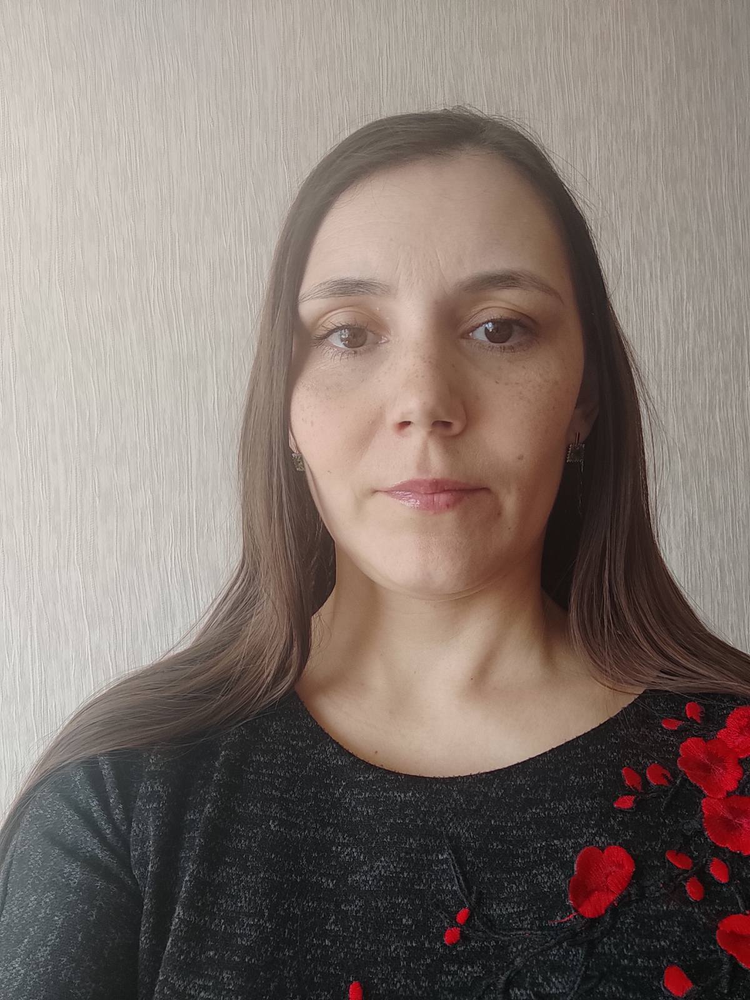

Замараева
Татьяна
Инженер по специальности"Стандартизация и сертификация"

Персональная информация
Дата рождения: 14.04.1984
Проживаю:Новокузнецк, Россия
Мои номера
+7 923 634 07 37
+7 934 607 07 37
Viber: Tatyana
+7 923 634 07 37
WhatsApp:Tatyana
+7 923 607 37 07
Language
основной Русский
English - А1
Elementary
|
Образование
С 01.09.2001 по 28.06.2004гг. - Кузнецкий индустриальный колледж. Техник-электрик по специальности “Техническая эксплуатация и ремонт электрического и электромеханического оборудования”.
С 05.09.2004 по 21.01. 2008 гг. – “Сибирский государственный индустриальный университет”. Инженер по специальности “Стандартизация и сертификация”.
Опыт работы
С 22 июля 2003 по 16 .05.2008 гг.- ОАО “ЗСМК” ОТК. Контролер в производстве черных металлов 5 разряда. Проводила контроль готовой продукции.
С 19.05 2008 и по настоящее время - ОАО “ЗСМК” Управление охраны и режима. Оператор видеонаблюдения 5 разряда. Организация пропускного и внутриобъектового режима и контроль охраны собственности ОАО”ЕВРАЗ ЗСМК”.
Мои Навыки
Владею программами: MS Windows and MS Office
Так же хорошо использую следующие программы: Intellect, Securos,VideoNet
Очень хорошо разбираюсь в следующих программах Microsoft: Microsoft Word, Microsoft Excel, Microsoft Paint
Ответственность,обучаемость,коммуникабельность,умение работать в команде, стрессоустойчивость
Мои хобби и интересы
Активный образ жизни, чтeние книг, путешествия, уважаю оперу и театр
Обо мне
Меня зовут Татьяна Замараева мне 38 лет,обладаю высокой работоспособностью, умею работать в режиме многозадачности и в команде, имею развитые организационные и управленческие способности, так же ценю в людях честность, вежливость, доброту, порядочность, исполнительность.
|